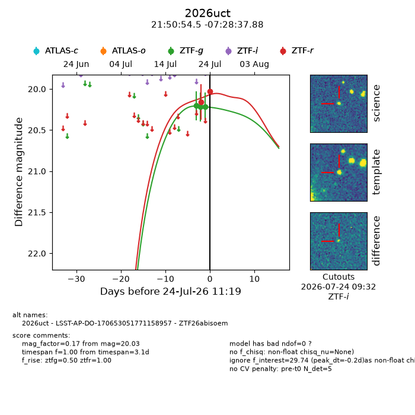
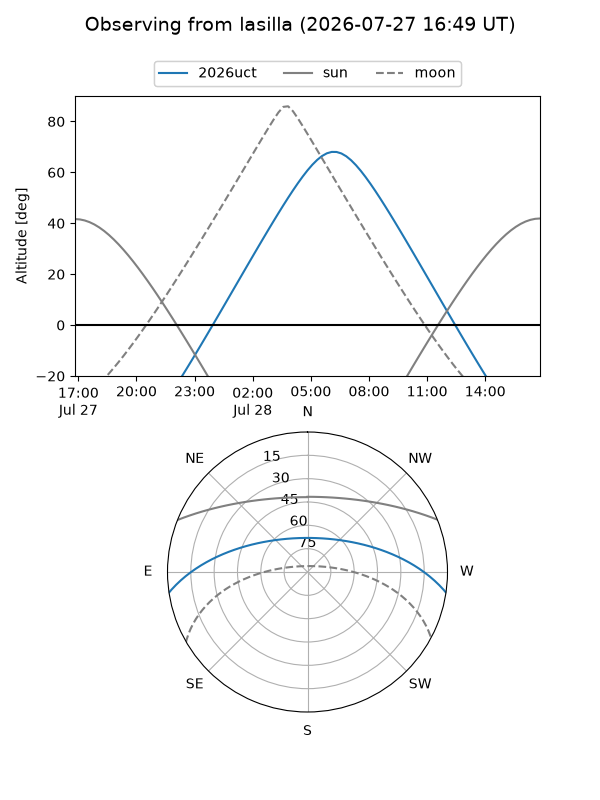
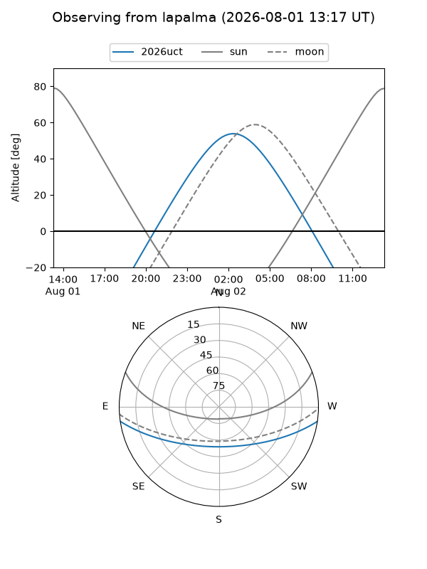
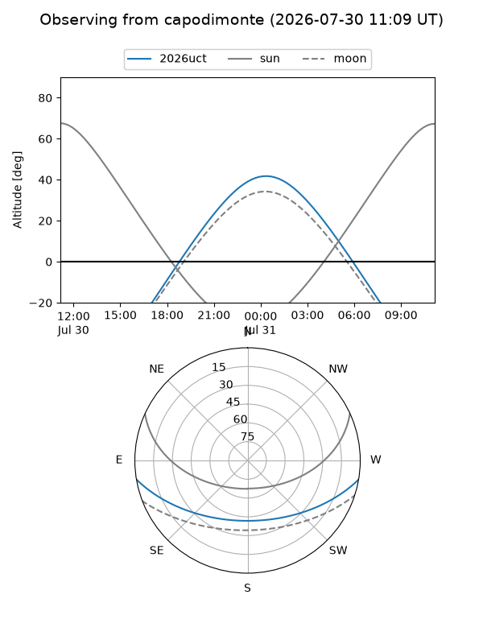
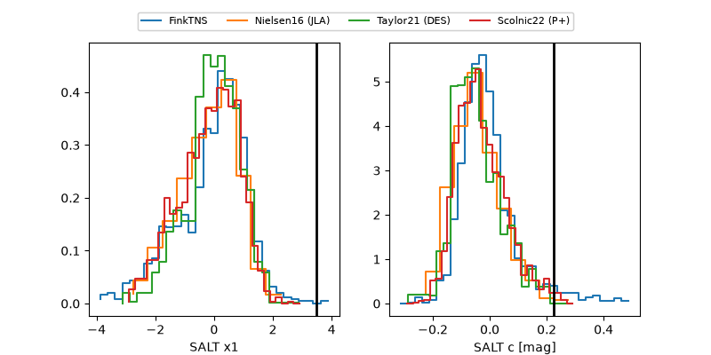

2026uct
Target 2026uct at 2026-07-24 11:21
Aliases and brokers:
FINK-ZTF: ztf.fink-portal.org/ZTF26abisoem
Lasair-ZTF: lasair-ztf.lsst.ac.uk/objects/ZTF26abisoem
ALeRCE-ZTF: alerce.online/object/ZTF26abisoem
YSE-PZ: ziggy.ucolick.org/yse/transient_detail/2026uct
TNS name: wis-tns.org/object/2026uct
Direct TNS query: direct search
alt names
ZTF26abisoem (ztf,fink_ztf)
2026uct (tns,yse)
LSST-AP-DO-170653051771158957 (iau_lsst)
Coordinates:
equatorial (ra, dec) = 327.7269,-7.47719
equatorial (HMS+DMS) = 21:50:54.46,-07:28:37.88
galactic (l, b) = (49.0548,-42.98899)
Flags:
TNS type: nan
peak dt: -0.2
Photometry:
last ztfg=20.21, ztfr=20.03
3 ztfg, 2 ztfr detections
Lightcurve

Visibility



Additional plots
